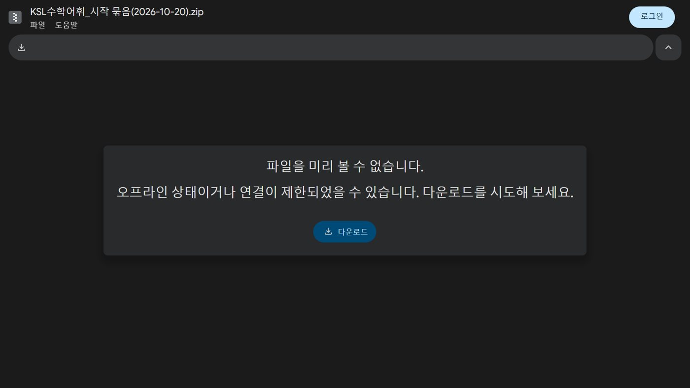
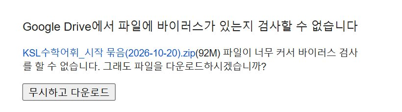
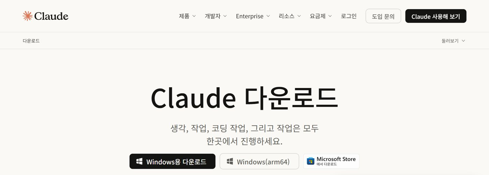
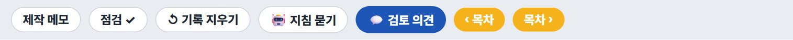
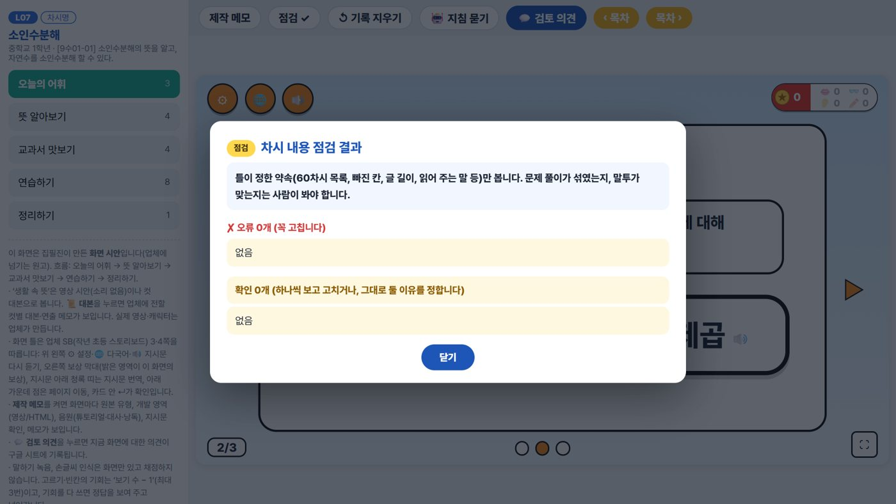
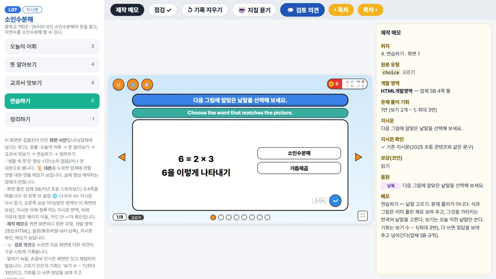
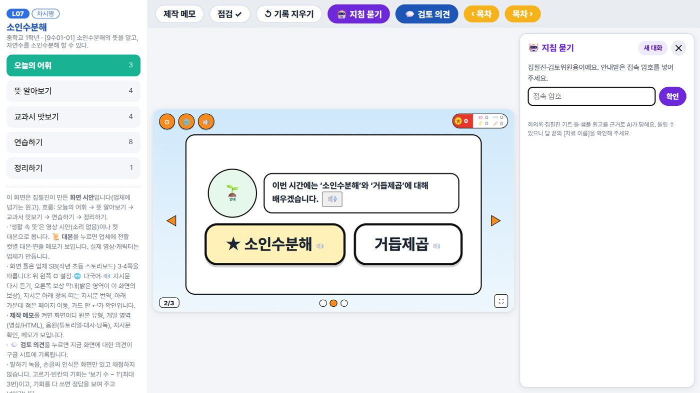
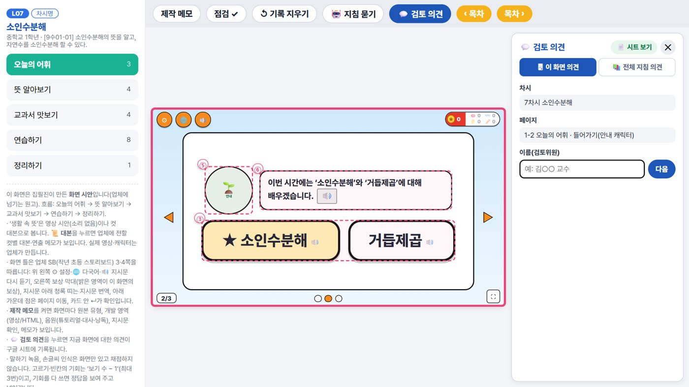
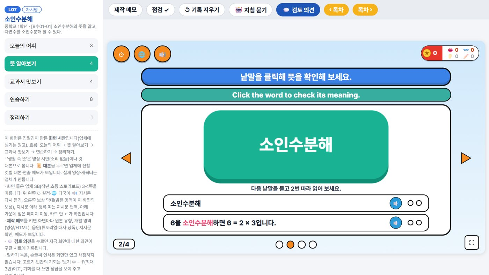

0시작 전에
준비할 것 네 가지
5분- Windows 컴퓨터와 인터넷. 학교 컴퓨터에서 설치가 막혀 있으면 개인 노트북을 쓰세요.
- Claude 계정과 결제 수단. 유료 요금제(Pro)부터 클로드 코드를 씁니다.
- 시작 묶음을 내려받아 둡니다. 구글 드라이브에서 받기 (92MB) → 오른쪽 화면처럼 다운로드를 누르고, 바이러스 검사 안내가 나오면 무시하고 다운로드를 누릅니다.
- 내가 맡은 차시 번호(대표 교사가 정해 준 담당 차시).


1구독
Claude Pro 구독하기
10분- 브라우저에서 claude.ai에 들어가 가입하거나 로그인합니다. 구글 계정 로그인도 됩니다.
- 왼쪽 아래 이름 → 설정 → 요금제에서 Pro를 골라 결제합니다.
- 요금제 화면에 현재 요금제가 Pro로 보이면 끝입니다.
알아 두기Pro에는 일정 시간 동안 쓸 수 있는 양(사용 한도)이 있어요. 한도에 닿으면 몇 시간 뒤 다시 쓸 수 있다는 안내가 나옵니다.
일반계정요금제개인정보
요금제
무료기본 대화
Pro ✓클로드 코드 포함
2설치
Claude 데스크톱 앱 설치
10분- claude.ai/download에서 Windows용 다운로드를 눌러 설치합니다.
- 앱이 열리면 로그인 → 브라우저에서 1단계 계정으로 로그인하면 앱으로 돌아옵니다.
- 앱 왼쪽 메뉴의 Code를 찾아 둡니다. 오늘 작업은 모두 여기서 해요.
안내가 더 나오면Code를 처음 열 때 “Git for Windows”처럼 필요한 프로그램을 설치하라고 하면, 안내 링크에서 받아 기본 설정 그대로 설치한 뒤 앱을 다시 여세요.

＋ 새 채팅채팅프로젝트Code
무엇을 만들어 볼까요?
Code에서 작업을 시작해요
3폴더
작업 폴더(키트) 준비
5분- 다운로드 폴더의
KSL수학어휘_시작 묶음(2026-10-20).zip을 오른쪽 클릭 → 모두 압축 풀기. - 안에 있는
KSL수학어휘_차시개발키트폴더를 문서처럼 찾기 쉬운 곳에 둡니다. 폴더 이름은 그대로. - 폴더를 열어 오른쪽 그림처럼 생겼는지 봅니다. 내 차시는
차시폴더에 생겨요.
지키기
CLAUDE.md, 자료, 샘플, 틀, 도구는 직접 고치지 마세요. 작업을 시작할 때 저절로 최신으로 바뀝니다.차시내 차시가 생기는 곳
샘플7차시 본보기
자료60차시 목록 · 구성 가이드
도구 · 틀Claude가 씀
CLAUDE.mdClaude가 읽는 지침
먼저 읽기(선생님용).md짧은 안내
내 설정.txt지침 묻기 암호
4열기
Code에서 키트 폴더 열기
5분- 앱의 Code에서 새 작업을 시작하고, 폴더를 고르는 단추로
KSL수학어휘_차시개발키트를 고릅니다. - 입력창 근처에 폴더 이름이 보이면 준비 끝.
- Claude가 파일을 만들거나 도구를 실행할 때 허락을 묻습니다. 키트 폴더 안의 일이면 허용을 누르세요.
편하게같은 종류를 자꾸 물으면 “이번 대화 동안 허용”처럼 묶어서 허락하는 단추를 써도 됩니다.
＋ 새 작업Code지난 작업
📁 KSL수학어휘_차시개발키트
무엇을 도와드릴까요?
이 명령을 실행해도 될까요?
powershell -File "도구\최신 지침 받기.ps1"
허용이번 대화 동안 허용거부
5첫 대화
작업 내용 파악시키기
10분- 아래 문장을 복사해 입력창에 붙여 넣고 보냅니다.
폴더 내용을 읽고 작업 내용 파악해 줘.
- Claude가 최신 지침 받기 → 차시 틀 맞추기 → 검토위원 의견 받기를 스스로 합니다(1~2분).
- 작업을 짧게 설명하고 선생님 성함과 어느 차시부터 할지 묻습니다. 성함을 알려 주세요.
인터넷 확인 실패학교망이 GitHub을 막으면 나오는 말이에요. 그대로 진행해도 됩니다.
폴더 내용을 읽고 작업 내용 파악해 줘.
✓ 최신 지침 받기 — 최신 지침입니다: 2026-10-20.1
✓ 틀 맞추기 · 전체 지침 의견 받기
이 폴더는 이주배경 학생을 위한 중학교 수학 어휘 차시를 같은 틀로 만드는 작업 폴더예요. 차시마다 오늘의 어휘 → 뜻 알아보기 → 교과서 맛보기 → 연습하기 → 정리하기 순서로 만듭니다.
선생님 성함을 알려 주시겠어요? 그리고 어느 차시부터 만들까요?
6샘플
샘플 차시 둘러보기
10분- 탐색기에서
샘플\07_소인수분해(샘플).html을 더블클릭하면 브라우저로 열립니다. 인터넷 주소로 보기 - 왼쪽 단계 목록이나 화면 양옆 화살표로 끝까지 넘겨 봅니다.
- 위쪽 단추 네 개를 눌러 봅니다. 오른쪽에 눌렀을 때의 모습이 있어요.
💬 검토 의견검토위원이 쓰는 칸이에요. 연습으로 의견을 남기지 마세요(공유 시트에 그대로 쌓여요).
활동 고르기업체가 만들 수 있는 활동을 직접 해 보기: 인터랙티브 유형 보기




내 설정.txt
7만들기
내 차시 만들기
15분- 담당 차시 번호를 넣어 부탁합니다.
8차시 만들어 줘.
- Claude가 학습 어휘와 구성을 먼저 보여 주거나 몇 가지를 물어요. 대답하거나 “그대로 진행해 줘”라고 하세요.
차시\08_….html이 생기면 더블클릭해 엽니다.- 위쪽 점검이 점검 ✓인지 봅니다. 숫자가 있으면 눌러 나온 글을 복사해 Claude에게 붙여 넣으세요.
성공샘플처럼 다섯 단계로 넘어가고 점검이 ✓. 영상 자리는 컷별 대본으로 나와요(영상은 업체가 만듭니다).

8고치기
말로 고치기
10분화면을 보며 평소 말투로 부탁합니다. 한 번에 하나씩, 화면 왼쪽 위 번호(예: 2-1)로 위치를 짚으면 정확해요.
틀로 안 되는 것화면 모양 자체를 바꾸고 싶으면 “틀 수정 요청에 적어 줘”라고 하세요.
2-1 생활 속 뜻에 ‘공통’이 쓰이는 생활 장면을 하나 더 넣어 줘.
뜻 카드 문장을 초등학교 4학년이 알아들을 만큼 쉽게 바꿔 줘.
연습하기 첫 번째 고르기의 그림을 다른 예로 바꿔 줘.
점검에 이렇게 나와: (점검 내용 붙여 넣기)
왜 이렇게 만들었어? 근거를 알려 줘.
방금 바꾼 것 되돌려 줘.
9마치기
저장과 다음 작업
5분- 만든 차시는
차시폴더의 html 파일 하나예요. 지우지 마세요. 제출은 대표 교사가 안내하는 방법으로. - 대화는 앱 왼쪽 목록에 남습니다. 다음에는 같은 폴더로 새 대화를 열고 이렇게 시작하세요.
폴더 내용을 읽고 작업 내용 파악해 줘. 8차시 이어서 고치자.
08_최대공약수.html내가 만든 차시
_예전 틀틀이 바뀌기 전 사본
읽어 보세요.txt